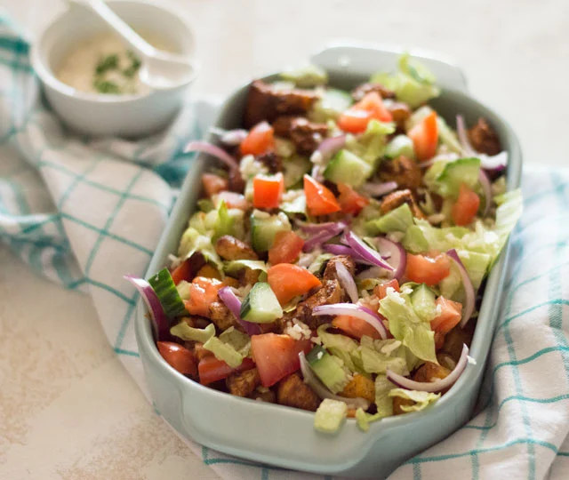

Kipsalon

Ingrediënten
- 500 Gram Kip
- Patat/friet
- Shoarmakruiden
- Ijsbergsla
- 1 grote tomaat per persoon
- 1 rode ui
Stappenplan
- Doe de patat in de air-freyer voor 25 minuten op 180 graden.
- Doe daarna de kip in de pan en bak tot goudbruin
- En voeg de shoarmakruiden toe
- snij de sla uien en tomaten in stukjes
- Verdeel de patat en kip en garneer met de sla